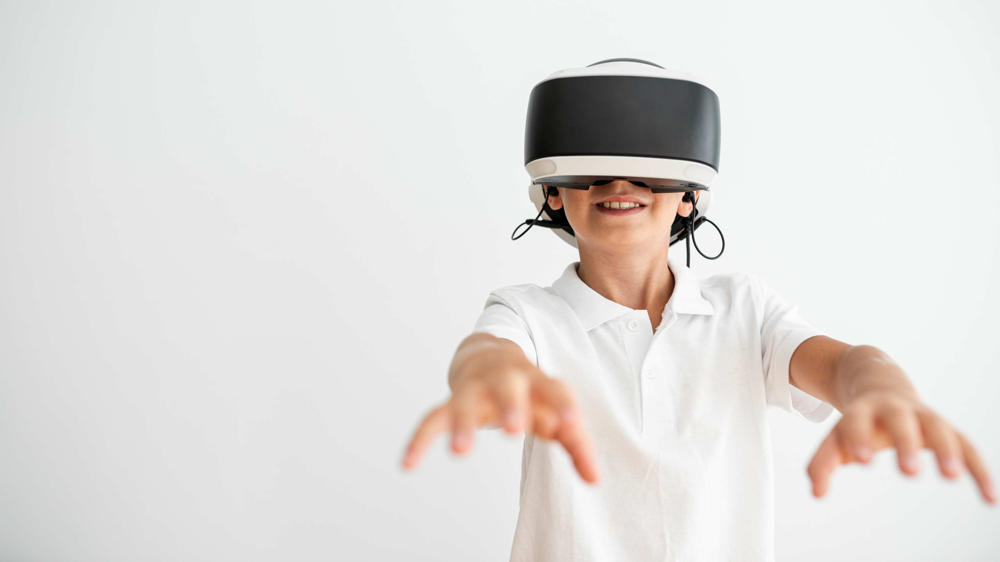
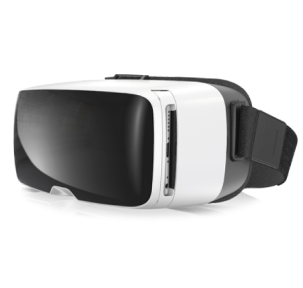

Digital Planet VR
Образовательный виртуальный планетарий в Новороссийске. Познавательное приключение в мир звёзд и галактик.
Что такое VR-планетарий?
Это образовательная программа, использующая технологию виртуальной реальности.
Зрителям выдаются очки виртуальной реальности, оператор запускает сеанс планетария на всех очках одновременно. В коллекции фильмов идут обучающие картины о космосе, астрономии и обществознании.
За счёт реалистичности и имитации игры такое обучение повышает мотивацию и стимулирует активную мозговую деятельность ребёнка.
Что показываем в планетарии
Как это работает?
Готовим инвентарь
 1
1Наши специалисты готовят каждые VR-очки к использованию, обрабатывая устройства специальным средством для ухода после каждого сеанса.
01 / 04Выбираем фильм
2В нашем архиве есть образовательные фильмы по теме космоса, астрологии и обществознания. Мы работаем с самым крупным производителем мультимедиа продуктов в РФ.
02 / 04Надеваем VR-очки
3Ученики получают VR-очки, наш техник помогает им разобраться как правильно надеть очки и закрепить их на голове. Для ребят со зрением, отличным от 100%, техник настраивает диоптрии.
03 / 04Исследуем галактики!
 4Ребята окунаются в виртуальные миры и с удовольствием изучают всё вокруг. После показа остаются яркие эмоции и запоминаются важные моменты о планетах, звёздах и галактике.
04 / 04
VR-технология
Masters Glass VR-iii
Используем только оригинальные импортные VR-очки. Технологии протестированы и безопасны для глаз. Напряжение во время просмотра — как при прогулке за счёт качественного объёмного изображения.
01 / 04Оборудование
Все фильмы воспроизводятся при помощи встроенных в очки экранов мобильных телефонов ведущих брендов. Наши техники привезут всё оборудование с собой: от вас нужно лишь помещение для урока.
02 / 04Безопасность
Зритель всегда находится в центре зала, и четко зафиксирован в пространстве, что делает просмотр понятным и комфортным. Технология виртуальной реальности не портит зрение, а эффект присутствия развивает креативность и пространственное мышление.
03 / 04Система крепления
Подходит под любой размер головы, даже для первоклассника. Во время просмотра не получится навредить голове ребёнка за счёт тщательно проработанной конструкции очков.
04 / 04
Часто задаваемые вопросы
Сколько длится сеанс? Дети не устают во время просмотра?
Безопасны ли VR-очки для зрения ребёнка? Какие есть ограничения?
VR-очки были разработаны специально для того, чтобы каждый человек, независимо от возраста, качества зрения и опыта использования аналогичных продуктов мог безопасно и легко пользоваться этой технологией. У нас есть сертификат качества продукции и лицензия для её использования на территории РФ. Для людей с зрением, отличным от идеального, на VR-очках предусмотрена регулировка диоптрий.
Действительно ли это образовательный метод, или это лишь игрушка?
Всё понятно! Хочу заказать выезд VR планетария, что нужно сделать?
Контакты
Новороссийск
+7 (923) 465 – 01 – 41 digitalPlanetNR@mail.ruМосква
+7 (495) 855 – 24 – 19 digitalPlanetMoscow@mail.ruСаратов
+7 (942) 221 – 21 – 78 digitalPlanetSaratov@mail.ru
Остались вопросы? Задайте их нам!
Мы обязательно свяжемся с вами в течение двух рабоичх дней